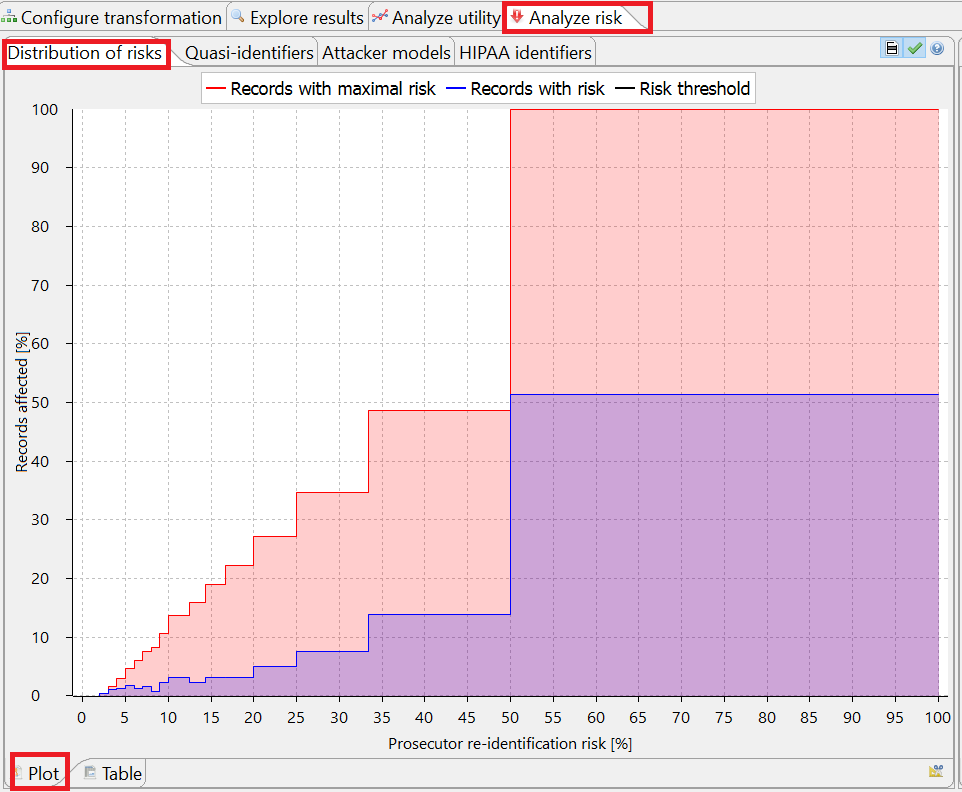
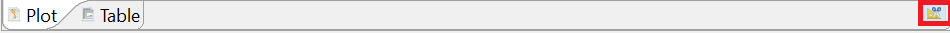

In this view, the distribution of re-identification risks amongst the records of the dataset is displayed. The distribution is calculated for both input and output data, either as a histogram or as a table.
Note: The plot scale can be change by clicking the button "Toggle logarithmic scale" in the bottom right.
